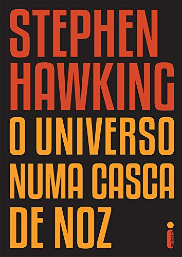

OBRAS


Hawking, mesmo com todas suas limitações motoras, foi autor e coautor de 15 livros de divulgação científica. Seus livros ajudaram a divulgar complexas teorias cosmológicas em linguagem fácil para leigos, que renderam sucessos de vendas com marcas passando de 10 milhões de cópias. Em suas últimas publicações o físico em sua cadeira de rodas usava o queixo para digitar, passando cerca de um minuto para escrever cada palavra.
Abaixo segue uma pequena mostra do acervo deixado por ele junto com uma breve descrição dos seus maiores sucessos:
1.
| Uma Breve História do Tempo | |
|---|---|
Resumo:Para o iniciado, Uma breve história do tempo, escrito em 1988 e traduzido em mais de 40 línguas é uma bela representação de conceitos complexos baseados na teoria da Relatividade Geral e da Mecânica Quântica, onde busca responder questões como: Qual a origem do universo? Ele é infinito? ou houve um começo e haverá um fim? Uma breve história do tempo vendeu mais de 10 milhões de exemplares em todo o mundo e ficou 237 semanas na lista de mais vendidos do Sunday Times. |
|
2.
| Breves Respostas para Grandes Questões | |
|---|---|
Resumo:Lançado em 2018, Uma breve história do tempo nos presenteia com seus pensamentos finais sobre as maiores perguntas da humanidade. Conduzidos sobre reflexões à respeito a origem do universo, a existência de Deus e a natureza do tempo, assuntos sempre submetidos a seu intelecto afiado de cientista. Aliado à curiosidade que o impulsionou por toda a vida, ele projeta seu olhar também para o futuro, buscando soluções para problemas que ameaçam hoje o mundo como o conhecemos, tais como o aquecimento global, a fome e a urgência de um desenvolvimento sustentável. Internacionalmente famoso, o cientista já vendeu cerca de 300 mil exemplares pela Intrínseca no Brasil. |
|
3.
| O Universo numa Casca de Noz | |
|---|---|
|  | Resumo:Lançado em 2001, o livro vem como uma reedição do grande sucesso de Uma breve história do tempo, contando com ilustrações, fotos e esquemas detalhados, elucidando temas complexos por meio de conceitos e ideias do dia a dia, como a inflação, as cartas de baralho e as linhas ferroviárias, e permeado com seu peculiar senso. Relançado no Brasil em 2015 agora pela Intrínseca, O universo numa casca de noz já vendeu mais de 60 mil exemplares. |
4.
| Buracos Negros | |
|---|---|
Resumo:Em 2016, durante uma série de palestras emblemáticas na rede de televisão britânica BBC, o lendário físico discorre sobre as complexidades que cercam um dos mais fascinantes mistérios do universo, os Buracos Negros. No livro, ele argumenta se pudéssemos compreender como os buracos negros funcionam e como eles desafiam a natureza do espaço e do tempo, seríamos capazes de desvendar os segredos do universo. Cheio de notas explicativas, o livro já foi responsável pela venda de 150 mil exemplares pela Intrínseca. |
|